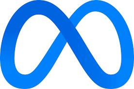

Backend engineer with 4+ years building high-scale systems in fintech and search. Most recently worked on GPU-cluster infrastructure for LLM RL fine-tuning at Meta. Currently pursuing an MSCS at UMass Amherst (4.0 GPA). I’m especially interested in distributed systems, databases, and performance engineering.

SELECT FOR UPDATE SKIP LOCKED, with worker leases and crash recovery.I'm open to backend, distributed systems, or AI engineering roles. Whether you have an opportunity, a question, or just want to chat tech — my inbox is always open.